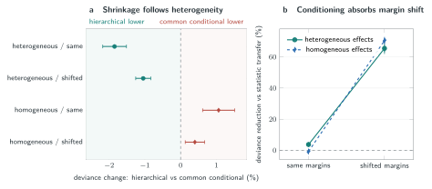

Linked source donors
Linked measurements define donor-level joint tables.
Background. Linked single-cell assays resolve cross-modal dependence because they measure molecular states in the same cell. Recipient cohorts may provide the marginal state frequencies of both assays without preserving cell-level pairing. Copying a source joint distribution then confounds association with cohort-specific abundance.
Results. We predict the missing recipient joint table by estimating its centered log-linear interaction at fixed margins. Penalized exact conditional likelihood estimates the population interaction and shrinks donor deviations; the estimate is then combined with each recipient's observed margins. Fitted on 36 Cambridge donors, the method achieved mean deviance per cell 0.01220 across 56 Newcastle donors, compared with 0.01478 for signed-root deviance-statistic transfer. The reduction was 17.46% (paired-donor 95% confidence interval for the loss difference, -0.00413 to -0.00080), with lower loss in 50/56 donors. Mean deviance for the destroyed-link control was 0.02274, and the intact-link method had lower loss in 51/56 donors. Across 128 ground-truth simulations with heterogeneous source interactions, donor shrinkage reduced deviance by 1.85% (1.52% to 2.18%) relative to common-effect conditional estimation. Under strong margin shift, fixed-margin prediction reduced deviance by 65.49% (63.02% to 67.72%) relative to signed-statistic transfer.
Conclusions. Fixed-margin prediction separates cross-modal association from cohort-specific abundance. Across held donors and ground-truth simulations, recipient margins corrected abundance shift, whereas donor shrinkage helped when source interactions were heterogeneous.
Linked single-cell assays measure RNA, chromatin, proteins, molecular age, and lineage in the same cell or experimentally related unit. Joint latent-variable models integrate paired measurements or predict a missing modality. We ask whether cross-modal association learned from linked source donors can predict a recipient joint distribution from its two observed margins.
Marginal frequencies change with cell composition, activation, sequencing depth, and assay scale. Copying a source table therefore transfers abundance together with dependence. Signed Pearson and likelihood-ratio statistics summarize departure from independence, but their scale and attainable range depend on the margins. A statistic pooled across donors can consequently change meaning at recipient margins.
Centered log-linear interactions and conditional odds-ratio estimation are established tools for observed contingency tables. We use them to predict an unobserved recipient table from linked source donors and the recipient margins. The method pools heterogeneous donor effects, then reconstructs each table at the abundance observed in its recipient.
Linked measurements define donor-level joint tables.
Conditioning on both margins isolates log-linear association, and donor shrinkage estimates the population component shared across donors.
Combining this estimate with recipient margins reconstructs a feasible recipient table.
For ordered marker pair e, let Pe be a positive joint-probability table for linked states U and V. Orthonormal contrast matrices remove the row and column components of its log table. We call the resulting centered log-linear interaction the coupling field.
For a binary table, the coupling field is one-half of the log odds ratio. This field contains all log-linear interaction degrees of freedom, is invariant to positive row or column tilts, and vanishes exactly at independence.
For recipient q, the prediction is the fixed-margin expected table at transported population log odds. This table preserves the recipient margins without a pseudocount or post-fit projection.
The matched statistic comparator transfers either the signed root Pearson statistic or the signed root likelihood-ratio deviance from the row-plus-column independence model. We normalized statistics by table size, pooled them across source donors, rescaled them for each recipient, and inverted them at its margins. Both methods received the same recipient margins without recipient pairings.
The destroyed-link control permuted complete protein profiles within each donor before joint tables were formed. This preserved RNA and protein margins and dependence within the protein panel but removed cell-level RNA-protein linkage. We refitted the selected conditional estimator to the permuted tables. Fixed-margin independence and a graph-zero fit provided further controls.
The Stephenson held-site confirmation followed an executable public plan released before the linked evaluation outcomes were accessed. It fixed eligibility, donor allocation, cell selection, state definitions, marker panels, estimator grids, comparators, loss, uncertainty, and success criteria. After the pilot passed, all development donors supplied the final fit. Predictions from the recipient margins and their checksums were published before the recipient RNA-protein pairings were accessed.
Across 56 Newcastle donors, the hierarchical conditional estimator reached mean deviance 0.01220, compared with 0.01478 for signed-root deviance-statistic transfer. The corresponding 17.46% reduction had a paired-donor loss-difference interval of -0.00413 to -0.00080. The conditional estimate was better in 50/56 donors. All 36 Cambridge development donors supplied the final source fit after pilot selection.
The estimator also reduced deviance by 46.36% relative to the destroyed-link fit of 0.02274 (paired-donor interval -0.01323 to -0.00749; 51/56 donors favorable). In post hoc fitted-baseline analyses, it improved on the common-effect conditional estimate by 6.18% and on pooled-table log odds with conditional reconstruction by 3.39%.
GSE239452 was analyzed as a post-access corrected cohort replication. The hierarchical conditional estimate reached mean deviance 0.00851, compared with 0.01413 for corrected signed-root deviance-statistic transfer, a 39.81% reduction favored by all nine pregnant donors. The common-effect conditional estimate was 2.20% lower than the hierarchy and was favored in all nine donors.
Across seven GSE317605 patients and 28 visits, leave-one-patient-out calibration selected a zero hypergraph penalty. Mean deviance was 0.006530, compared with 0.006609 for tuned, time-conditioned, ridge-penalized Poisson prediction. Because the selected primary and graph-zero configurations were identical, neither condition passed and no pilot or held matrix was requested.
The factorial simulation separated donor heterogeneity from margin shift. With heterogeneous donor effects and source-like margins, the hierarchical estimator reached deviance 0.01493, compared with 0.01521 for the common-effect conditional estimate. The reduction was 1.85% (95% interval 1.52% to 2.18%). After the recipient margins shifted, conditional transport reduced deviance by 65.49% (63.02% to 67.72%) relative to raw signed-root deviance-statistic transfer.

Public CITE-seq studies compare the method with signed-statistic transfer, fitted interaction models, and margin-preserving link destruction.
Stephenson et al. profiled PBMC RNA and surface proteins with a common TotalSeq-C panel across Cambridge and Newcastle. The split used 12 Cambridge calibration donors, 24 Cambridge pilot donors, and 56 Newcastle donors for the held-site test. Each donor contributed 512 cells selected by a deterministic rule that did not access RNA or ADT counts. RNA state recorded raw detection. Deterministic within-donor protein ranks assigned 256 low and 256 high cells, fixing every protein margin before evaluation.
| Study | Transfer | Fit units | Evaluation units | Evidence role |
|---|---|---|---|---|
| COMBAT | Oxford calibration to Oxford pilot | 12 | 24 | Development |
| BMMC | Two fit donors to bridge donor batches | 2 donors | 4 batches | Development |
| Stephenson | Cambridge to Newcastle | 36 donors | 56 donors | Pre-outcome held site |
| GSE314416 | DB1 calibration to DB1 and DB2 pilot | 12 donors | 20 donors | Pilot criterion failed |
| GSE239452 | Nonpregnant to pregnant | 15 donors | 9 donors | Post-access corrected replication |
| GSE317605 | Leave-one-patient-out longitudinal calibration | 7 patients | 7 patients (28 visits) | Calibration criterion failed |
Recipient margins and source heterogeneity govern different parts of the prediction. Fixed-margin reconstruction absorbed abundance shifts in simulation and transferred RNA-protein association from Cambridge to Newcastle without copying source composition. Donor shrinkage improved on common-effect conditional estimation at the held site and under simulated heterogeneity. Common-effect pooling was stronger in the corrected pregnancy cohort and under homogeneous simulated effects. The value of hierarchical pooling therefore depends on variation in source association.
Classical stratified odds-ratio models estimate association among observed tables. Our target is an unobserved recipient table constrained by its observed margins. The method combines hierarchical donor pooling with fixed-margin reconstruction, and the held-site design tests the resulting prediction under criteria set before outcome access. Comparisons with common-effect, pooled-table, and fixed-interaction Poisson baselines show that accuracy depends on the interaction coordinate and on how it is pooled across donors.
The held confirmation and corrected cohort replication are observational RNA-protein studies and do not establish perturbation causality or a molecular mechanism. Both use binary states, 512 cells per donor, and the same nine RNA and nine protein markers. The 81 pairwise tables within a donor reuse cells and marker vectors. The estimand is conditional dependence, not zero-shot protein abundance. Broader panels, technologies, tissues, state resolutions, and marker sets require independent replication.
The selected graph penalty was zero in COMBAT, BMMC, Stephenson, GSE239452, and the GSE317605 calibration, so the held evidence covers graph-zero hierarchical conditional transfer. It does not establish graph or hypergraph regularization.
Fixed-margin interaction prediction reconstructs cross-modal association at recipient-specific abundance. It outperformed prespecified signed-statistic and destroyed-link controls in a held-site experiment. Recipient margins address abundance shift; source heterogeneity determines the value of donor shrinkage.
All source datasets are public through the accessions listed in Additional file 1 and retain their original licenses. Analysis plans, MIT-licensed software, cohort and simulation results, study records, and verification scripts are available in the immutable v2.0.3 release. Raw matrices are not redistributed.